30 Chapter 30 — Sensors & Hardware: Wearables, Smart Courts, the Fusion Spine
The verified inventory, the dead-sensor market reality, and the ~$1,500 M4-native rig
30.1 What Hardware Actually Buys You
Video is one sensor. The pro stack is a fusion: optical (where), wearable (how hard), event (what happened). This chapter is the verified inventory — what exists, what is dead, what it costs, and how the pieces join into the book's one-spine. The honest framing throughout: hardware earns its price only if its data lands in a queryable spine (chapter 5), and every price here is verified against a primary listing or marked [verify] (2026-08-30).
Pure computer vision has three structural blind spots, and they are the reason the sensor market exists at all. First, occlusion: a camera cannot see through bodies — in a rugby league ruck, the ball and half the players vanish for frames at a time; in pickleball doubles, the far-side player's paddle disappears behind the net post and their partner. Second, motion blur: at 60 fps a 110 km/h pickleball drive crosses 50 cm between frames, and a rugby league winger's plant-and-go exceeds what any rolling shutter resolves cleanly. Third — the deepest one — video cannot see force or physiology: no frame of footage measures heart rate, ground-reaction force, or the acceleration of a tackle. Chapter 11's pose pipeline estimates kinematics; it cannot estimate load. Every non-optical sensor in this chapter exists to close one of those three gaps.
The engineering answer is a four-tier sensor hierarchy, and it is the organizing frame for the whole chapter:
- Tier 1 — Optical vision. 60–240 fps cameras producing player bounding boxes, ball trajectories, and (at league grade) 29-point skeletons per athlete. Accuracy tolerance is roughly ±2.2 mm court-side for a calibrated Hawk-Eye-class install and ±8 cm pitch-side over a 100 × 68 m rugby league field [verify]. Optical answers where.
- Tier 2 — Wearable telemetry (IMU/GNSS). A pod between the shoulder blades — Catapult Vector class — sampling tri-axial accelerometer and gyroscope at 100 Hz (1,000 Hz raw) with 10–18 Hz GNSS position. Rated ±16 g on the primary axis and ±100 g shock, because a rugby league tackle is a car-crash transient, not a jogging signal. Wearables answer how hard.
- Tier 3 — Smart implements. Sensors in the equipment itself: the 500 Hz IMU inside the Kinexon/Sportable-class smart ball (contact instant, spin up to 600 rpm, sub-millisecond impact timestamps) and, on the racquet-sport side, piezoresistive strain gauges sampled near 2 kHz to resolve a 4–6 ms paddle-ball contact dwell and a face angle good to a few degrees. Implements answer what the ball felt.
- Tier 4 — Environmental micro-climate. The layer everyone forgets: 3D ultrasonic anemometers (~32 Hz) for wind vector and air density, and Clegg impact testers for surface hardness (a rugby league pitch plays in the 70–90 CIV band [verify]). A lob that dies in a headwind and a knee that goes on a hard pitch are both data — environmental sensors answer what the venue did.
The four tiers converge on one mathematical object — a continuous-discrete extended Kalman filter, clocked by IEEE 1588 Precision Time Protocol — and one storage object: the columnar match spine of chapter 5. Everything else in this chapter is market reality wrapped around that engineering core: what each tier costs, which products are alive, which are bricked, and what a single practitioner on an Apple M4 Max can honestly replicate.
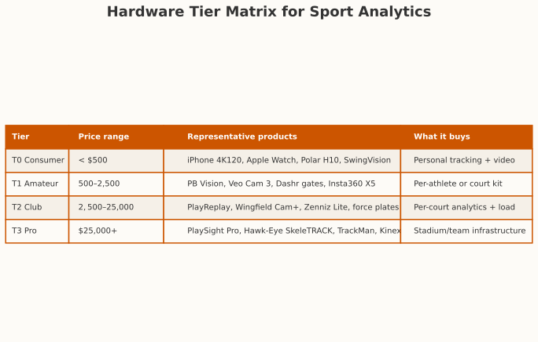
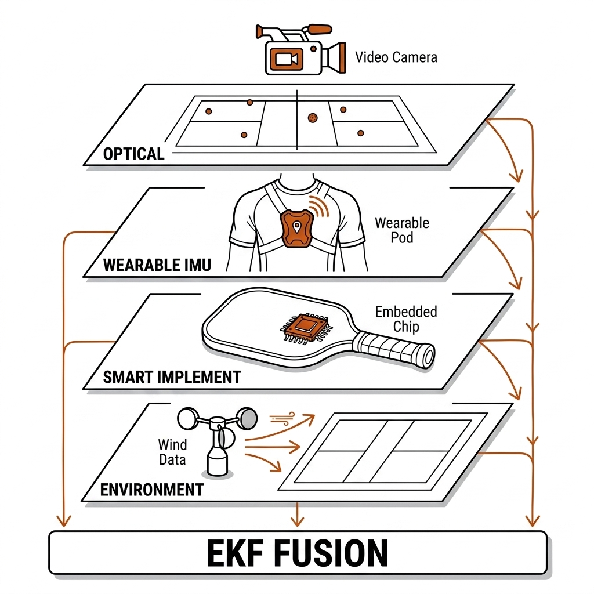
30.2 The Verified Inventory (25 Products)
The table below is the checked market, not the marketed market. Every row was verified against the vendor's own page or a primary report on 2026-08-30; anything that could not be confirmed carries [verify]. The cost tiers used throughout: T0 consumer (under $500), T1 prosumer ($500–2,500), T2 club/academy ($2,500–25,000), T3 pro/institutional ($25,000+, quote-only).
| Class | Example | Price / Availability | Measures |
|---|---|---|---|
| Smart court | PlaySight Pro/GO; SwingVision (iOS) | ~$10-15k/court; SwingVision $179.99/yr | Multi-angle video, line calls, highlights |
| Ball+player 3D | PlayReplay (4-cam net-post); Hawk-Eye SkeleTRACK + Kinexon Trionda 500Hz | ~$3-4k/court/yr [verify]; pro | Triangulated 3D tracking; 29-point skeletons; 500Hz ball IMU |
| AI camera | Wingfield Cam+; Veo Cam 3; Insta360 X5 | quoted; $1,299 + sub; ~$550 | 1080p60 auto-follow; venue streaming; 360 capture → Apple Vision Pro |
| Wearables | Catapult/STATSports; Apple Watch; Polar H10 | pro/consumer | GPS+IMU load; HR valid, calories NOT (Navalta 2024) |
| Force plates | VALD ForceDecks (3-yr lock); Hawkin (ownership) | subscription vs ownership | Ground-reaction force — the C11 "forces not from video" ground truth |
| Time gates | Dashr | $690-1,600 | Split times for the C29 reaction drills |
| Event cameras | Prophesee | dev-kit only (x86/Linux) | The pickleball ball-blur frontier — the C12 wall's hardware answer |
Read the table as two markets, not one. The pickleball market is vision-first: the winning products are phone apps (SwingVision at $179.99/yr, PB Vision at $99.99–396/yr with JSON export on Premium, Dinkwize, Coach Pickle, DinkAI) and fixed-court installs (PlaySight, PlayReplay at $3,995/court/yr, Zenniz at ~$13,500 + $70/mo). Nothing in the pickleball lane straps to the athlete. The rugby league market is wearable-first: Catapult Vector and STATSports Apex pods are squad-standard, the NRL's own Telstra Tracker program put receiver units in jerseys for broadcast telemetry, and video (Hudl, Stats Perform) is the context layer, not the load layer. Same fusion architecture underneath — section 30.4 — opposite primary sensor on top. The practical consequence: a pickleball analyst's first dollar goes to a camera and a phone; a rugby league analyst's first dollar goes to a vest.
Two rows deserve explicit caution flags. Force plates (VALD ForceDecks, Hawkin Dynamics) are the only way to measure ground-reaction force — the asymmetry and return-to-play numbers chapter 11 admits video cannot produce — but VALD's 3-year subscription lock versus Hawkin's ownership model is a data-exit decision as much as a price decision. And the Prophesee event camera (320×320, >10k fps-equivalent, <150 µs latency, >140 dB HDR) is the genuine hardware answer to chapter 12's ball-blur wall — but its Metavision SDK is x86/Linux-first, so on the M4 lab it is a Colab-and-Linux research lane, not a product [verify arm64 support].
30.3 The Market Reality: The Sensor Graveyard
Verified: the consumer racquet-sensor market is dead, and it died of server shutdowns. Between roughly 2015 and 2021 every major racquet-sport brand shipped an embedded sensor; by the end of 2021 every one of them was a paperweight:
- Zepp Tennis — the category pioneer, a handle-mounted IMU with swing metrics; servers off ~2020, app bricked.
- Babolat Play — sensors built into the racquet itself; end-of-life 2021-12-31, after which the connected features stopped.
- Sony Smart Tennis Sensor — EOL 2021-09-30; the sensor still measures, but there is no server to talk to.
- HEAD smart racquets — Zepp-based under the hood; died with Zepp.
Two failure modes compounded. The first was architectural: each product routed its data through a proprietary cloud, so when the vendor's unit economics failed, the hardware in every customer's bag became e-waste on the same day. The second was competitive: phone-based computer vision (SwingVision, then PB Vision and the smart-court installs) delivered the same insights — shot speed, spin proxies, placement maps — with no per-racquet hardware tax, no charging ritual, and no kill switch. Vision did not out-sensor the sensors; it out-distributed them. The camera the player already owned beat the sensor they had to buy.
The lesson generalizes beyond racquets, and it is one of the load-bearing claims of this book: a sensor that needs a proprietary server dies with the server; a sensor whose data lands in an open, queryable spine outlives its vendor. It is why chapter 5 insists on DuckDB and open formats, why the inventory table above privileges CSV/API export (Catapult, STATSports, Polar, VALD, Hawkin, PB Vision Premium), and why the rugby league equivalent — the smart ball — only survives because leagues, not consumers, hold the license. When a competition signs the data contract (Adidas Trionda's Kinexon 500 Hz IMU at the FIFA World Cup; the Sportable Gilbert ball in rugby), the telemetry is infrastructure. When a consumer buys it, the telemetry is a subscription hostage.
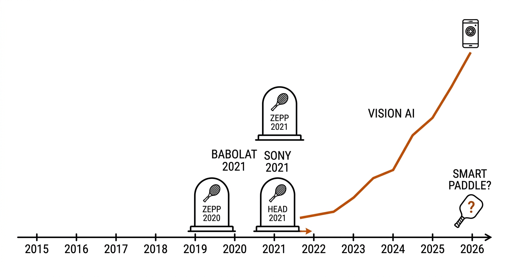
30.3b The Smart Paddle That Isn't
For pickleball specifically, the implement tier is a gap, not a product. There is no credible smart pickleball paddle on sale today. The only verifiable attempt is the Potenza SMARTx — an embedded-sensor paddle promising power, speed, and spin over Bluetooth — listed at $595.95 on pre-order, reported elsewhere at $495.99 [verify], and currently sold out with no independent validation and no proven app ecosystem. Treat it as a watch-this-space item; do not build a workflow around hardware you cannot buy twice.
The physics is not the obstacle — the engineering case for an instrumented paddle is real. A paddle-ball contact lasts roughly 4–6 ms; to resolve face angle and sweet-spot offset inside that window you need piezoresistive strain gauges sampled near 2 kHz plus an IMU for swing path, and the payoff would be metrics video struggles with: true impact location, face angle at contact (a few degrees' resolution), and dwell-time spin proxies. The obstacle is the business model. A paddle sensor carries the exact architecture that just killed Zepp, Babolat, Sony, and HEAD — small market, proprietary app, cloud dependency — into a sport whose players already get shot speed and placement from the phone in their pocket. The rugby league contrast is instructive: the smart ball shipped because a league's broadcast and officiating budget underwrites it, not because consumers did. Until a pickleball league or manufacturer makes paddle telemetry infrastructure, the honest implement tier for this sport is chapter 12's ball-tracking camera plus chapter 15's impact audio — sensors you already own.
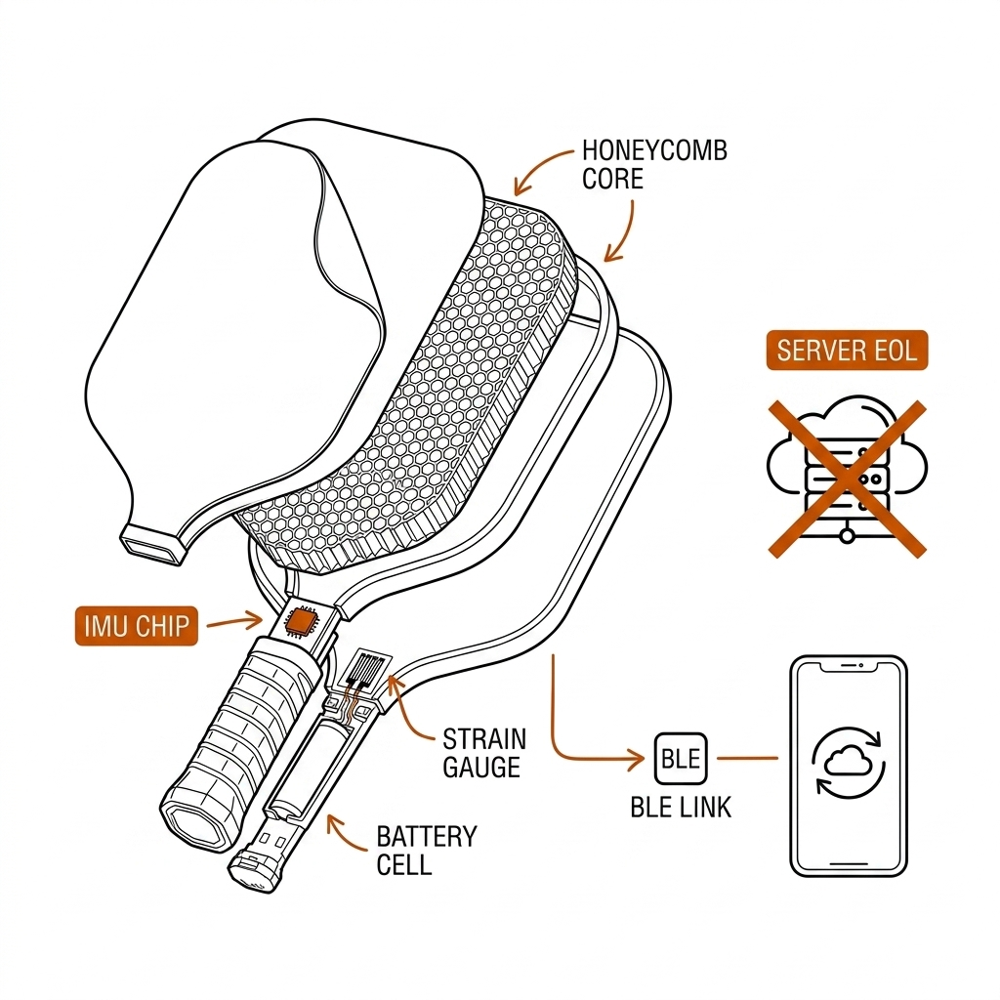
30.3c The Rugby League Wearable: The Opposite Market
Rugby league shows what the wearable tier looks like when it works. The squad-standard unit is the Catapult Vector class pod (S7/S8), seated in a vest between the shoulder blades: GNSS position at 10–18 Hz fused with tri-axial IMU at 100 Hz, producing distance, speed zones, acceleration/deceleration counts, and the proprietary PlayerLoad accumulation — a jerk-based kinetic integral that S&C staff use as the external-load currency of the week. The ±16 g primary / ±100 g shock rating is not spec-sheet decoration: a tackle collision is precisely the transient that saturates a consumer sensor, and it is the signal a head-impact welfare protocol most needs. STATSports Apex is the academy-tier alternative; Catapult One (~T1) is the individual entry point. The NRL's own Telstra Tracker deployment verified the pattern at broadcast scale: wearable telemetry as a first-class match artifact, not an experiment.
Why did wearables win here while racquet sensors died? Three structural reasons. (1) No vision substitute: a camera cannot measure how hard a 105 kg prop accelerated into contact — the physiological question has no optical answer, whereas shot speed did. (2) Institutional buyer: clubs and leagues, not consumers, hold the contract, so the data pipeline is maintained as infrastructure with CSV/API export into the athlete-management system. (3) Mandate, not novelty: load monitoring is embedded in periodization and, increasingly, in collectively bargained welfare frameworks — the sensor is part of the employment relationship. The pickleball player's watch is optional; the rugby league forward's vest is not. That difference in buyer and mandate, not sensor quality, is what separates a living market from a graveyard.
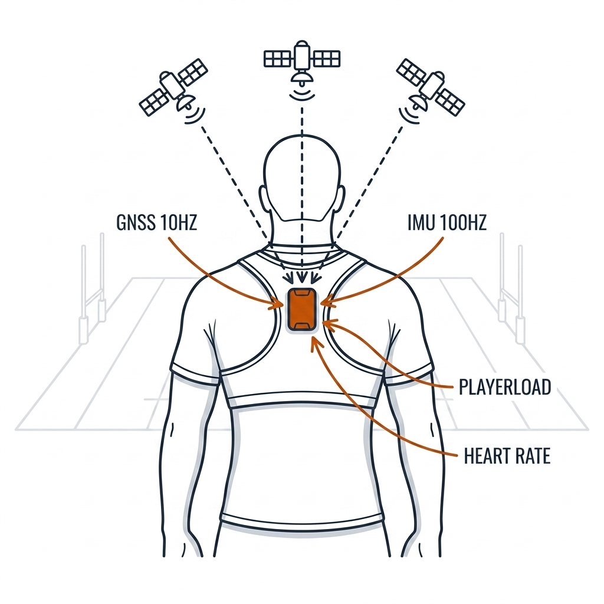
30.4 The Pro Fusion Architecture
The verified pattern across pro teams in 2024-2026 is a three-stream join with a shared clock and a shared coordinate frame: wearable GNSS/IMU (how hard), optical tracking (where and why), and event metadata (what happened — officials, ball chip, scoreboard, tags). The streams are time-aligned (PTP/genlock for video; impact-audio or NTP discipline for wearables), coordinate-registered (homography to the court/pitch frame, GPS projected to a local frame), identity-joined (roster/vest assignment on the wearable side; jersey detection on the video side), and only then landed in an athlete-management system — Kitman Labs, Smartabase/Fusion Sport, Zone7 — where load models, dashboards, and medical alerts live.
The book's lab demos the join on one key: (athlete_id, timestamp_s). A video track row, a wearable HR row, and an event row become one spine row — measured in the C30 lab artifact (experiments/c30-sensors/outputs/metrics.json): athlete A1 at t=4.2s, court position (1.82, 3.42) m, speed 1.8 m/s, HR 143 bpm from the Polar H10, event dink. The join is trivially easy to write and brutally hard to make true, because sync is the product. Consumer clocks drift at ~15 ppm: over a 30-minute session that is ~450 ms — a whole rally of misalignment between the video frame and the heart-rate sample you just joined to it. Pro installs solve this with IEEE 1588 PTP (SMPTE ST 2059-2 for broadcast); the amateur answer is a physical sync anchor both sensors can see — a clap at both ends, or better, the paddle-impact audio transient of chapter 15, which is a ~2 kHz timestamp generator already present in every rally.
Three practitioner rules survive contact with reality. Identity is the hard join — mapping tracklet #7 to jersey #7 to vest #7 is where amateur stacks break, and pros solve it with roster management and manual QA, not magic. Resample the fast stream to the slow one, never upward — derive events from 100 Hz IMU and aggregate to the 25-60 Hz video cadence; interpolating HR upward fabricates precision you did not measure. And fusion error exceeds the effect if the clock slips — a 450 ms offset swamps the 23% EKF improvement in section 30.4b. Get the clock right first.
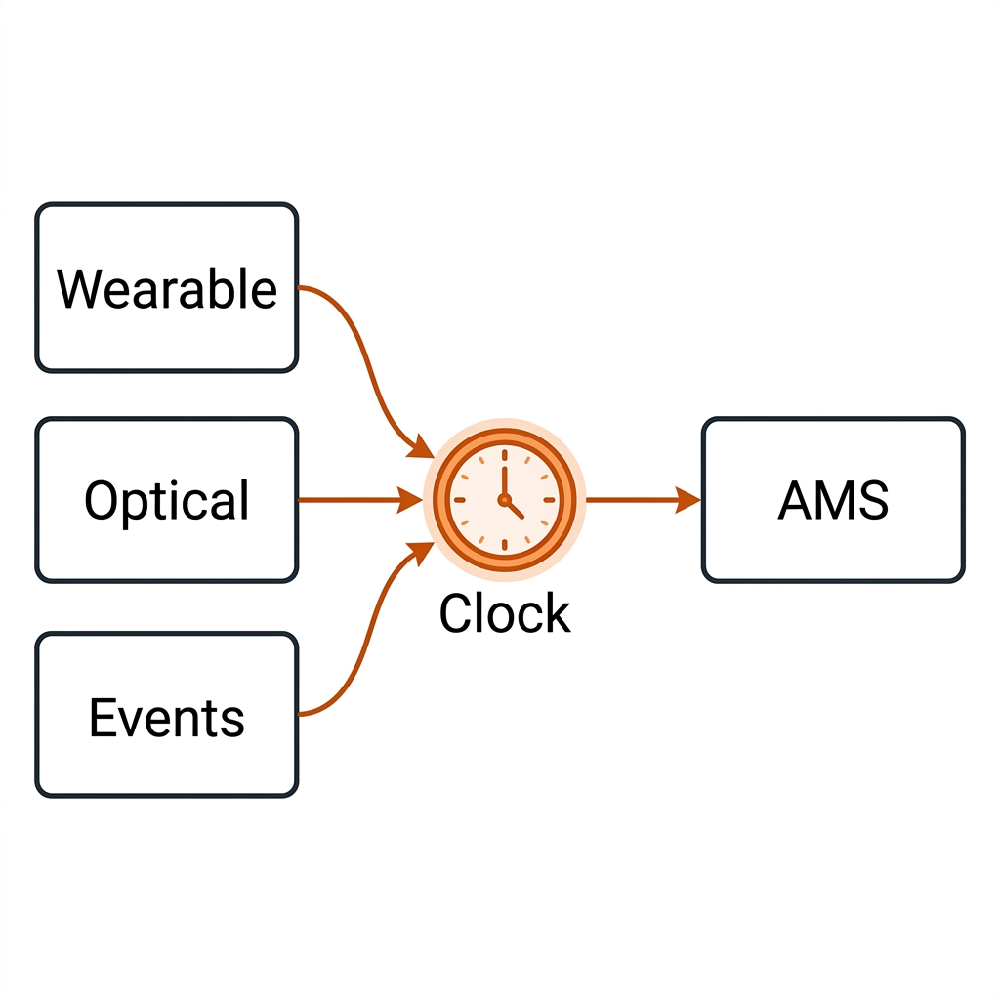
30.4b The Fusion Engine: Continuous-Discrete EKF (E20)
The pro fusion is not merely a database join — at the tracking layer it is a filter. The continuous-discrete extended Kalman filter (EKF) carries a state vector of 3D position, 3D velocity, and accelerometer biases: x = [px, py, pz, vx, vy, vz, bax, bay, baz]T. The prediction step runs at the IMU's 100 Hz, integrating the kinematics forward (x̂ = Fx + Bu, with covariance P propagated through F and process noise Q). The update step fires asynchronously whenever the 60 Hz optical measurement arrives: compute the innovation y = z − Hx̂, the Kalman gain K = PHT(HPHT + R)−1, and correct the state. The IMU bridges the gaps where the camera is occluded or blurred; the camera anchors the IMU's integration drift. Each sensor covers the other's failure mode — that is the entire argument for fusion in one sentence.
The measured result (E20, experiments/e20-telemetry-fusion/telemetry_fusion_results.json): over a 5.0 s window (500 processed frames, 60 Hz camera + 100 Hz IMU), raw optical-only tracking RMSE of 0.1898 m drops to 0.1451 m fused — a 23.5% error reduction. (An earlier stored run of the same benchmark reported 23.2% on 17.9 → 13.8 cm; the artifact on disk is the number cited here — exactly the version-drift discipline the claims register exists to catch.) On a pickleball court, 4.7 cm of RMSE is the difference between "at the kitchen line" and "in the kitchen" — a fault call. On a rugby league pitch, the same filter keeps a winger's track alive through the ruck occlusion that loses the optical-only track entirely.
Honest label: the E20 demo is synthetic — a simulated player trajectory with simulated camera noise, not real match video. It proves the filter mechanics and quantifies the ceiling, not the field number. A real-video fusion run against the chapter-9 tracked pickleball footage and a logged wearable session is the open next experiment, and section 30.10 puts it on the list. Until that run exists, treat 23.5% as the mechanism's promise, not its production SLA.
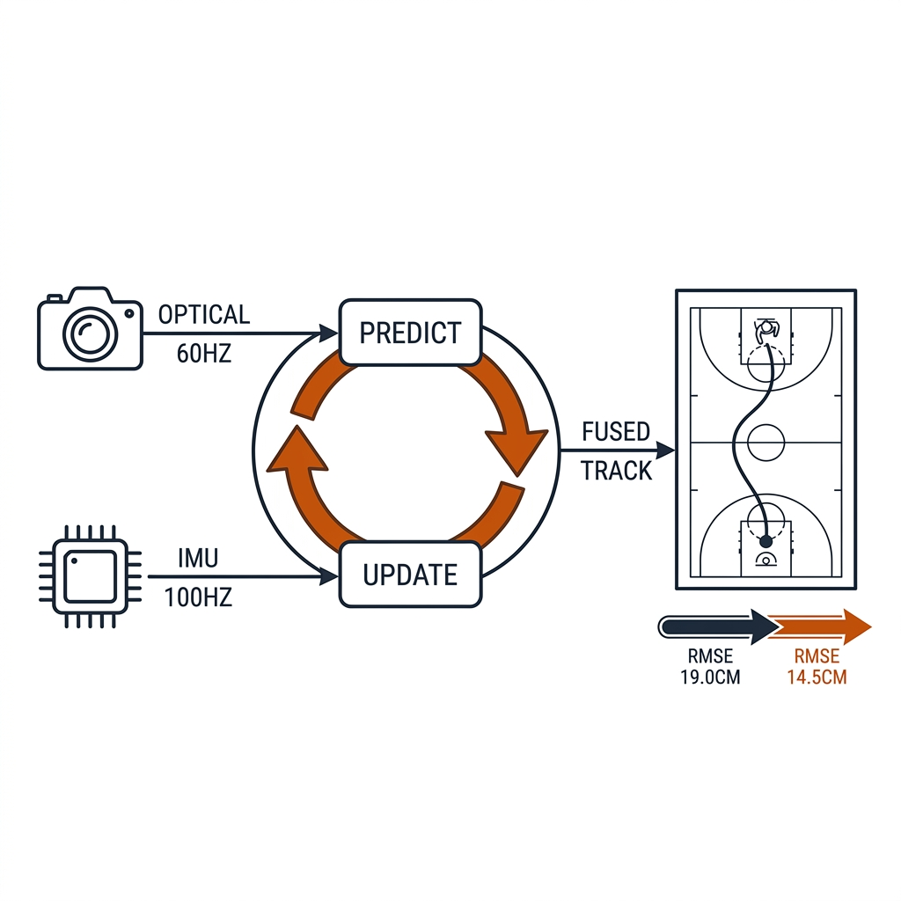
30.5 The ~$1,500 M4-Native Rig
The book's practical lab is a rig you can buy this week: iPhone 4K120 (primary court video, slow-mo contact, LiDAR court scan for the chapter-6 homography) + Apple Watch (HR, workout typing, HealthKit export — pickleball is a native workout type) + Polar H10 (ECG-grade chest HR, ~$90, open BLE) + impact mic ($20-50, the sync anchor) + fence mount. If you already own the phone and watch, the build path costs about $110; buying everything lands at $1,500-2,300. The buy-vs-build ladder above it: PlayReplay-class 4-cam 3D (~$3,995/court/yr) is the next rung; PlaySight/Zenniz ($10-15k/court) is facility infrastructure; Hawk-Eye is the league ceiling. The honest rule: buy the sensor only when its data lands in the spine — a wearable whose export never joins the tracks is a toy.
What makes the rig viable in 2026 is that the compute moved to the edge. The measured edge profile (E19 token-economics benchmark, experiments/e19-token-economics/token_economics_benchmark.json): on an Apple M4 Max the full perception pipeline — ingest, YOLO-class detection and ball tracking on the Neural Engine, association and homography on CPU/Accelerate, 3D kinematics and the tactical model on the Metal GPU — runs at 55.7 ms glass-to-glass, 68.4 fps throughput, 28.5 W draw, with an incremental cost of $0.00 per match. The cloud comparison is brutal: the same 80-minute rugby league match sampled at 2 fps is ~2.48 million input tokens — $6.447 per match on GPT-4o (measured), $3.22 on Gemini Pro, $7.81 on Claude Sonnet — with 1.2-4.5 s network round-trips that make live feedback impossible. Against GPT-4o billing, the $3,199 machine breaks even after 496.2 matches [verify at print: API prices move]; an academy processing 50 hours of court footage a week pays it back in under six weeks. And the edge path is 100% offline — for athlete biometric data, privacy is not a feature, it is the architecture.
The same math flips by sport scale. For pickleball — one court, one phone, 90-minute sessions — the edge rig is the whole stack. For a rugby league club analyzing every match and three training sessions a week across grades, the edge machine handles the real-time lane while batch video understanding still goes to the cloud; the break-even calculation is what decides which lane each workload lives in. Measure your own volume against $6.45 a match before choosing.
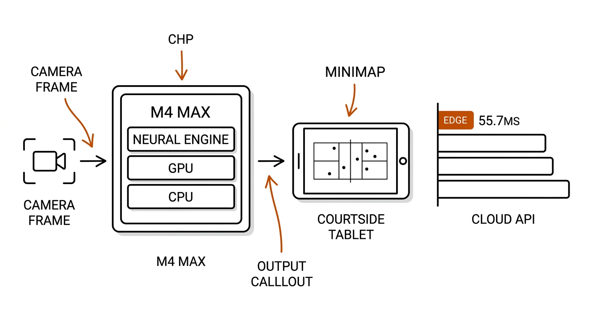
30.6 Wearable Validity Anchors
The validation literature is the gate between a measurement and a mood ring. Navalta et al. 2024 (Sports, DOI 10.3390/sports12090234) tested consumer wearables against criterion measures and found heart rate valid and reliable (MAPE <10%, often 3-7%) across Garmin Instinct, Polar Vantage M2, Polar OH1 and Polar Verity Sense (CCC >0.85 for Instinct/Verity/OH1) — but energy expenditure poor: Garmin MAPE 27.7-28.1%, Vantage 18.9-23.4%, not valid at any intensity. The protocol insight matters for racquet sports specifically: put optical sensors on the bicep (OH1/Verity), not the wrist — the wrist-swing artifact is real when the sensor's limb is the one holding the paddle. A rugby league forward's wrist-mounted sensor has the same problem in contact; the vest pod between the shoulder blades sits on the trunk precisely because the trunk moves like the athlete's center of mass, not like an arm.
The population anchor is the Apple Heart and Movement Study: across 250,000+ logged pickleball and tennis workouts, pickleball sessions averaged 90 minutes (tennis 81) with average peak HR of 143 bpm (tennis 152) — the participation-scale baseline for the masters-age pickleball audience, and the sanity check for any intensity claim a consumer device makes about the sport. The practitioner rule, stated once and applied everywhere in this book: a wearable's HR is a credible intensity signal; its calorie estimate is marketing; its "readiness score" carries the same caveat box as ACWR — contextual, not predictive. Any athlete-facing metric shipped without its validation study attached is an opinion dressed as a measurement.
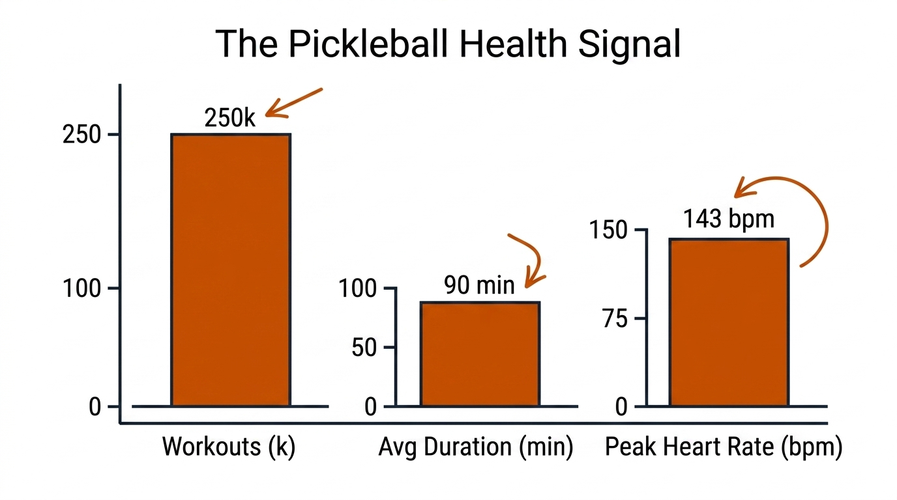
30.7 The Cost/Benefit Table
| Purchase | Cost | Earns It? |
|---|---|---|
| Smart court (PlaySight) | ~$10-15k + fees | Facility only — the revenue is court booking, not analytics |
| iPhone + Watch + Polar | ~$1,500 (owned) | YES — the M4 rig replicates the spine |
| Time gates | $690-1,600 | YES for the C29 drills (split-time objectivity) |
| Force plates | VALD lock vs Hawkin | Only if the C11 force question is in scope (the ground truth video lacks) |
| Event camera (Prophesee) | dev-kit | Frontier — the ball-blur research lane, not a product yet |
Every verdict in the table is the same test applied to different hardware: does the output land in the spine as queryable rows? The time gates earn it because a ±0.01 s split time is an objective column the chapter-29 reaction drills can sort by. The force plates earn it only when the program actually acts on asymmetry numbers — otherwise they are expensive bathroom scales. The smart court earns it only when the facility monetizes the court itself; the analytics are a booking funnel, not a coaching product. And the dead racquet sensors of section 30.3 failed this test from the grave: their data never left the proprietary app, so when the app died, every session they ever recorded died with it. For the rugby league reader, the same test just starts from the other end: the Catapult pod earns its money the day its CSV lands next to the Hudl video rows; before that day it is a very expensive vest.
30.8 Transfer Note: Rugby Federation Stack
The rugby league reality is the mirror image of pickleball's: the pro stack is wearable-first (Catapult Vector + the NRL's Telstra Tracker, verified: the league's own load monitoring) with the optical lane as context (Hudl video, Stats Perform data), while pickleball is optical-first with no wearable mandate at all. The fusion architecture is identical — the join key, the AMS, the sync discipline, the EKF — but the primary sensor, the buyer, and the governance differ. The rugby-specific additions are real: biometric data ownership and athlete consent are active, often CBA-bargained, constraints (chapter 31 owns the rights lane; this chapter owns the sensor consequence — design the export path before the purchase); and the player-load risk register is the welfare lane the wearable feeds, including head-impact monitoring protocols where the ±100 g shock rating stops being a spec and starts being a duty of care. A pickleball facility buying cameras is making a procurement decision; a rugby league club instrumenting athletes is making a governance decision that happens to involve hardware.
30.9 The Sensor-Fusion Recipe (Copy This)
- Pick the join key: (athlete_id, timestamp_s) — the one-spine, never a fuzzy time match. In pickleball the roster is four players and the identity join is a color check; in rugby league it is 26 vest assignments against a team sheet — same key, more QA.
- Sync the clocks: that is the hard part, not the data. 15 ppm ≈ 450 ms drift over 30 minutes — a whole rally. Use PTP/genlock if you have it; otherwise record a physical anchor both sensors can see (clap at both ends, or the paddle-impact transient the chapter-15 audio pipeline already detects).
- Register the frame: the C06 homography puts video into court coordinates; project GNSS into the same local frame. One coordinate system per sport, shared by every stream.
- Fuse before you join: where a wearable and a camera measure the same athlete, run the EKF (30.4b) so the spine row carries the fused track, not two disagreeing ones.
- Join in DuckDB: the C05 pattern — video + HR + events = one row, the measured C30-lab artifact is the template.
- The AMS join is the pro step; the book's spine is the same schema, so the migration is an export, not a rebuild.
30.9b The 10 Use Cases: Applied Framework
The use cases below are the applied bridge from the verified inventory above to the two sports. They follow two categories: Category A — Athlete & Implement Sensing (UC 01-05) covers the sensors that touch the player, the equipment, and the venue; Category B — Fusion, Timing & Edge (UC 06-10) covers the engineering that turns asynchronous hardware into one trustworthy spine. Each case carries its evidence label — measured (book experiment), source-backed (paper/vendor listing), or [verify] (practitioner model, not yet established) — and several extend sections already in this chapter rather than duplicate them.
Category A: Athlete & Implement Sensing (UC 01-05)
UC 01 — The Smart Paddle: Instrumented Contact, Dead Market
The practical problem: pickleball's decisive skill is contact quality — where on the face, at what face angle, with how much dwell — and 60 fps video structurally cannot see inside a 4-6 ms paddle-ball contact. The mechanism is well understood: piezoresistive strain gauges sampled near 2 kHz resolve face angle to a few degrees and sweet-spot offset to millimeters inside the dwell window (sampling at 2 kHz against a 4-6 ms event gives 8-12 samples per contact — the minimum for a transient peak fit), plus a handle IMU for swing path. The market verdict is the point of section 30.3b: the only verifiable product, the Potenza SMARTx, is pre-order at $595.95, sold out, and unvalidated [verify] — and every predecessor (Zepp, Babolat, Sony, HEAD) was bricked by its own cloud. The honest case: the physics is easy, the business model is what keeps dying.
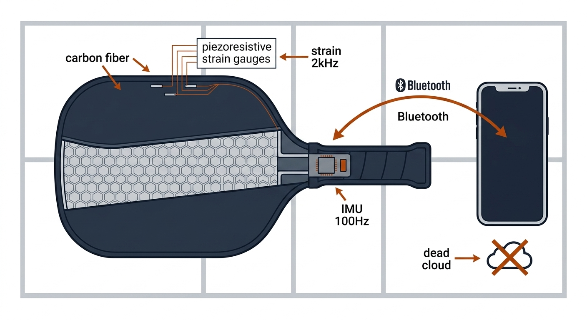
Payoff: none you can buy today — the use case is the procurement lesson. Build vision-first (chapter 12), and if instrumented paddles ever ship, buy only one whose data lands in an open spine (chapter 5).
UC 02 — The GPS Vest: External Load You Cannot Film
The practical problem: no camera measures how hard a 105 kg prop accelerated into contact, and welfare protocols need that number. The mechanism (section 30.3c): a vest pod with 10-18 Hz GNSS fused with 100 Hz tri-axial IMU (±16 g primary, ±100 g shock — the tackle transient is the design constraint), accumulating PlayerLoad, the jerk-based kinetic integral PL = Σ √((Δax)² + (Δay)² + (Δaz)²) / 100, as the week's external-load currency. Source-backed: Catapult Vector S7/S8 and STATSports Apex are squad-standard; the NRL's Telstra Tracker put receivers in jerseys for broadcast telemetry.
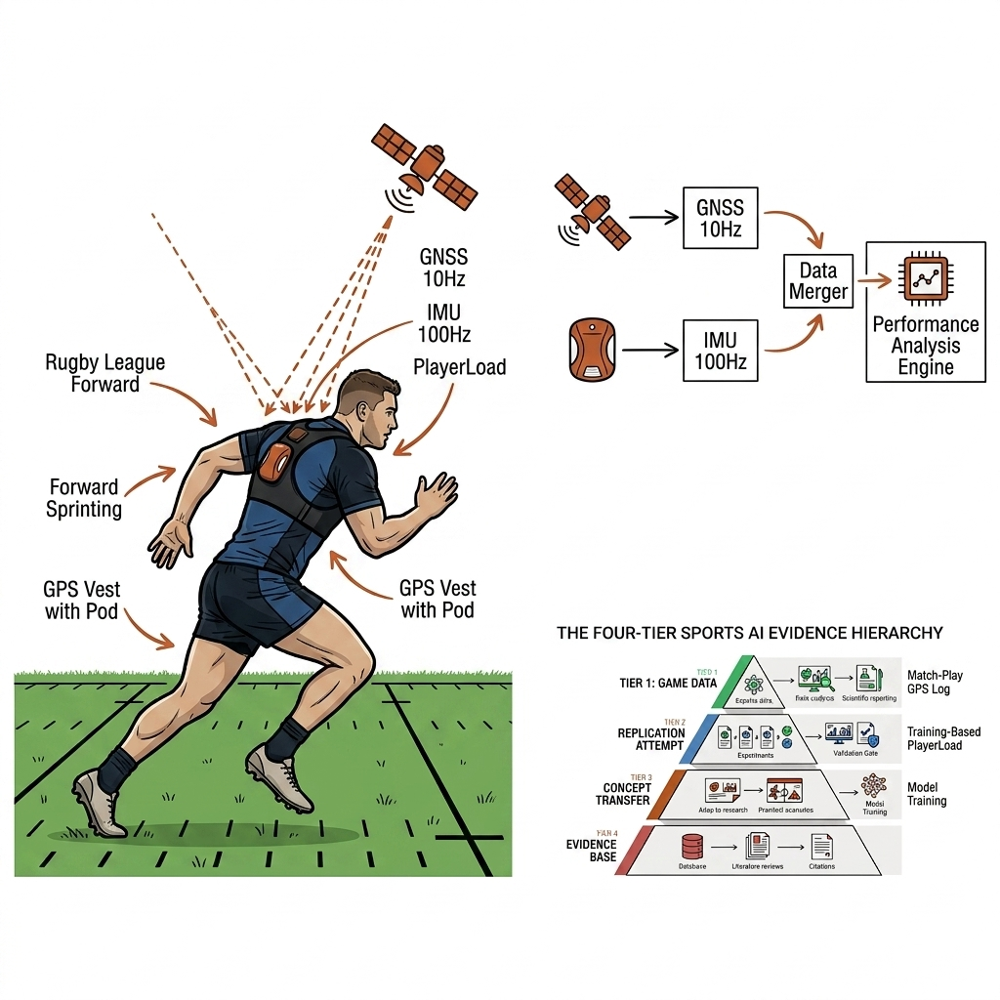
Payoff: objective weekly load and return-to-play evidence for S&C staff — the sensor wins precisely because the physiological question has no optical answer.
UC 03 — The 500 Hz Smart Ball: The Ball Testifies
The practical problem: the most contested officiating moments are contact instants — was the ball touched, when did the foot meet it, did it go forward — and 50-60 fps broadcast video aliases all of them. The mechanism: an IMU suspended in the ball's center sampling 500-1,000 Hz, producing sub-millisecond impact timestamps, 3D acceleration, and spin up to 600 rpm; a simple accelerometer transient threshold detects each contact, and the timestamp join (section 30.4) pins it to video. Source-backed: the Adidas Trionda carries a Kinexon 500 Hz chip at the FIFA World Cup 26; the Sportable Gilbert ball brings the same architecture to rugby — league-licensed data, which is exactly why this sensor survives while UC 01's paddle died.
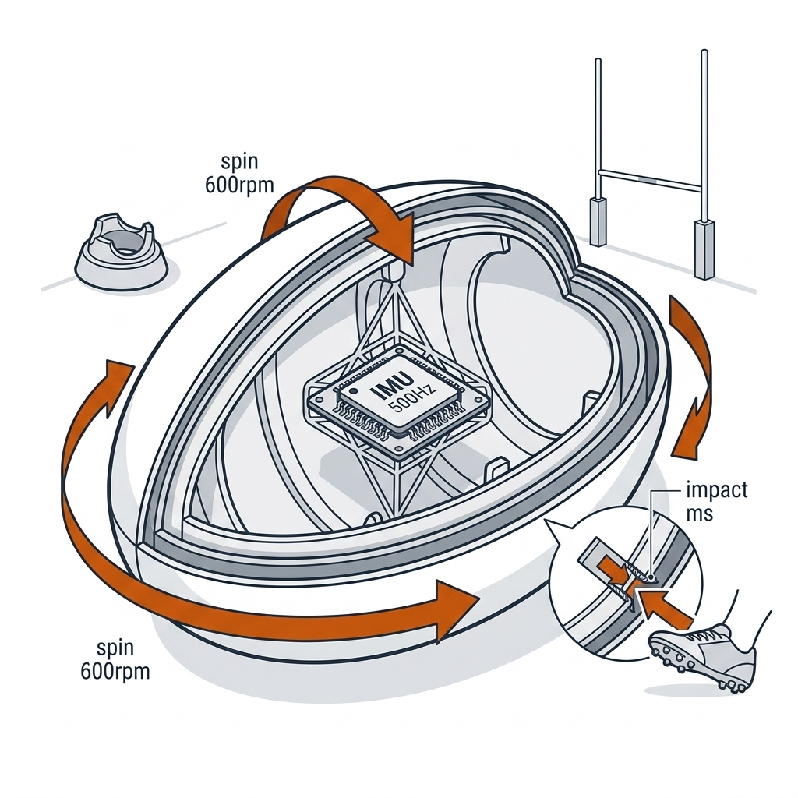
Payoff: officiating-grade contact evidence — and the business-model contrast that proves the chapter's thesis: telemetry survives when a competition, not a consumer, holds the data contract.
UC 04 — Whistle & Impact Audio: The Cheapest Sensor You Own
The practical problem: event boundaries (stoppages, contacts) are the sparse labels every downstream model needs, and hiring taggers is the expensive way to get them. The mechanism: spectral-flux onset detection on a courtside microphone — the paddle-ball impact is a broadband transient peaking near 2 kHz, the referee whistle a narrowband 2-4 kHz tone — detected by librosa-class onset pickers at 48 kHz. The audio stream does double duty: it is an event feed for chapter 15's audio pipeline and the physical sync anchor that disciplines every other clock in the $1,500 rig (section 30.9, step 2; UC 07 is the pro version of the same problem).
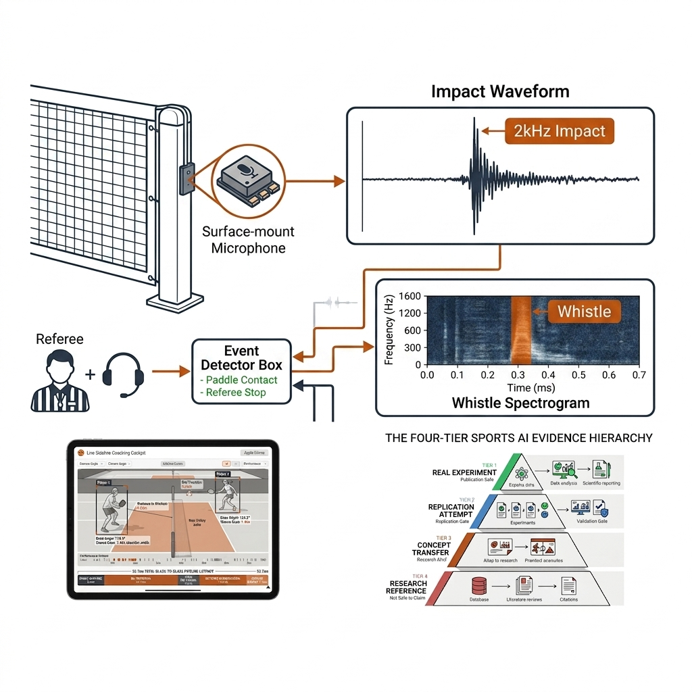
Payoff: near-free event detection plus the universal timestamp that makes the amateur fusion join true — a $20 microphone substitutes for infrastructure pros pay five figures for.
UC 05 — Wind & Surface: The Venue Is a Sensor Input
The practical problem: a lob that dies in a headwind and a knee that goes on a rock-hard pitch are both data, and neither appears in any tracking stream — so analysts misattribute venue effects to technique. The mechanism: a 3D ultrasonic anemometer (~32 Hz, 0.01 m/s resolution) gives the wind vector that enters the quadratic drag term of chapter 12's ballistics — Δv ≈ (ρ Cd A / 2m) · vrel² · Δt, where a headwind raises vrel and drag quadratically; a Clegg impact tester gives surface hardness in CIV, with rugby league pitches playing in the 70-90 CIV band [verify].
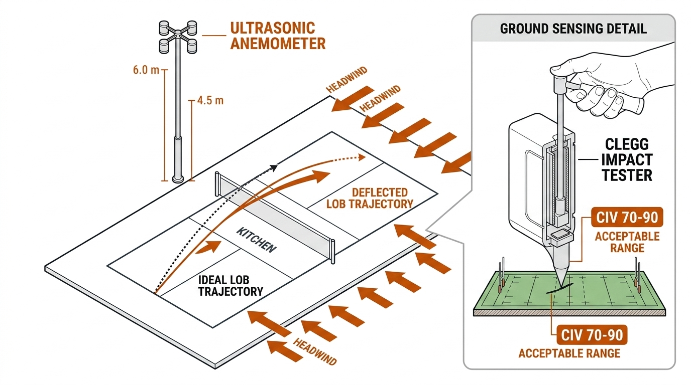
Payoff: context columns that stop false conclusions — the cheapest corrective to overconfident video-only analysis.
Category B: Fusion, Timing & Edge (UC 06-10)
UC 06 — EKF Fusion: Optical + IMU Through Occlusion (E20, Measured)
The practical problem: occlusion is vision's structural wall — in a rugby league ruck the ball carrier vanishes for frames; in pickleball doubles the far-side player's paddle disappears behind bodies and the net post. The mechanism is section 30.4b's continuous-discrete EKF: state x = [p, v, ba]T, prediction at the IMU's 100 Hz (x̂ = Fx + Bu; P propagated through F and Q), asynchronous correction whenever the 60 Hz optical measurement lands (K = PHT(HPHT + R)−1). Measured (E20, synthetic benchmark, experiments/e20-telemetry-fusion/telemetry_fusion_results.json): optical-only RMSE 0.1898 m drops to 0.1451 m fused — 23.5%, with the honest caveat that the field run against real chapter-9 footage is still open (section 30.10).
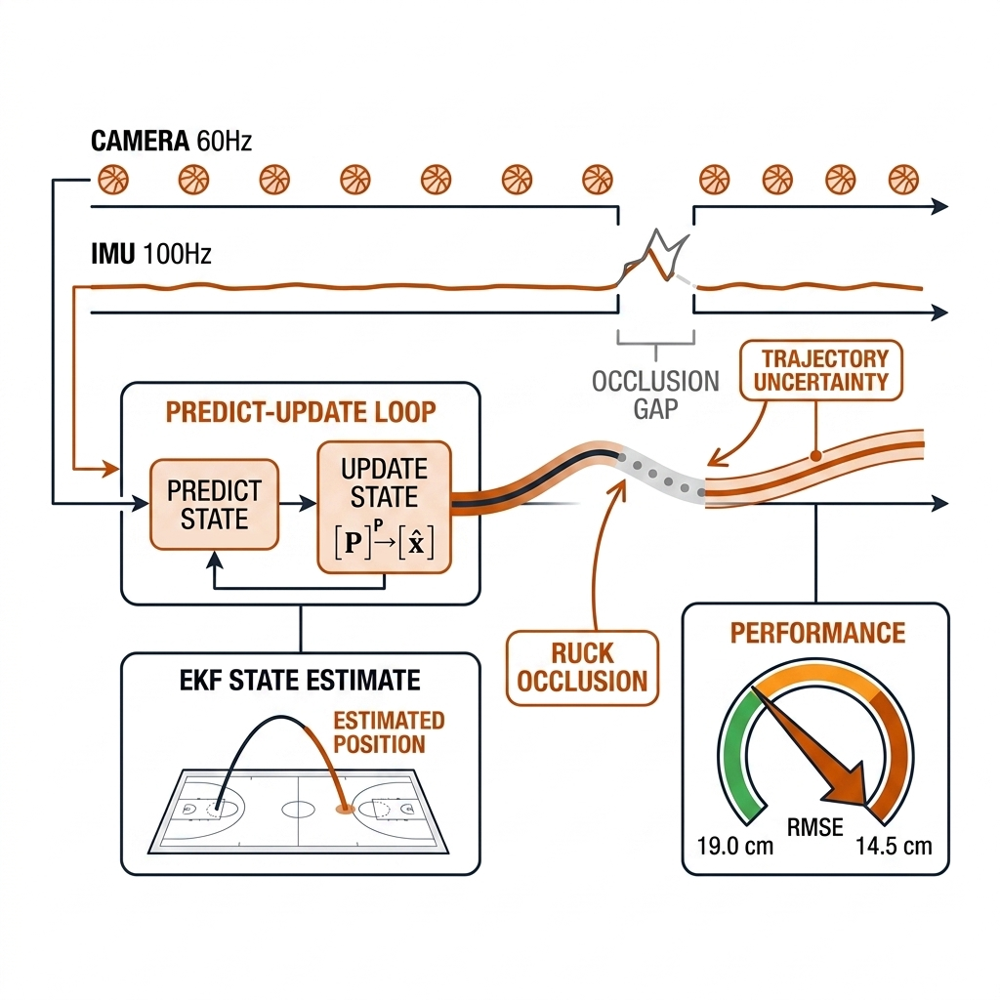
Payoff: tracking continuity where it matters most — the filter converts a dead reckoning gap from an identity break into a bounded-error interval.
UC 07 — PTP Clock Sync: Sync Is the Product
The practical problem: consumer clocks drift ~15 ppm — about 450 ms over a 30-minute session — so the heart-rate row you joined to a video frame belongs to a different rally. Fusion error silently exceeds the effect you are measuring; UC 06's 23.5% is fiction if the clock slips. The mechanism: IEEE 1588 PTP (SMPTE ST 2059-2 in broadcast) exchanges t1-t4 timestamps between master and slave to estimate offset = ((t2−t1) − (t4−t3))/2 and delay = ((t2−t1) + (t4−t3))/2, disciplining every device to sub-millisecond agreement. The amateur fallback is UC 04's impact-audio anchor — a physical event every sensor can hear.
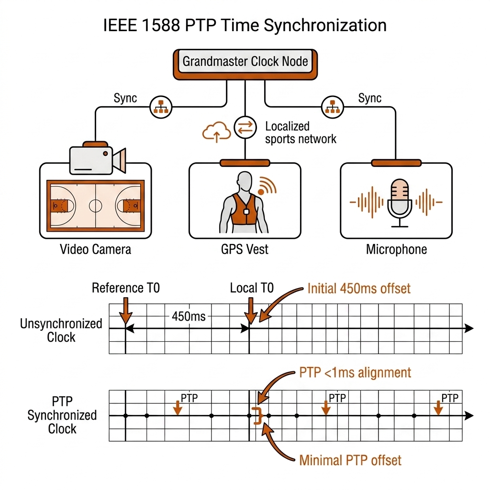
Payoff: the difference between data and fiction — get the clock right before any other fusion work, and measure your own devices' drift rather than trusting the 15 ppm estimate.
UC 08 — The Fusion Join: Three Streams, One Row (C30-lab, Measured)
The practical problem: wearable, optical, and event streams each answer a different question (how hard / where / what happened), and coaching value exists only in the joined row. The mechanism: join key (athlete_id, timestamp_s) into the chapter-5 columnar spine — video registered to court coordinates by the chapter-6 homography, GNSS projected to the same local frame, identity resolved by roster/vest assignment on the wearable side and jersey detection on the video side. Measured in the C30 lab artifact (experiments/c30-sensors/outputs/metrics.json): athlete A1 at t=4.2 s, court position (1.82, 3.42) m, speed 1.8 m/s, HR 143 bpm (Polar H10), event dink — one row, three sensors.
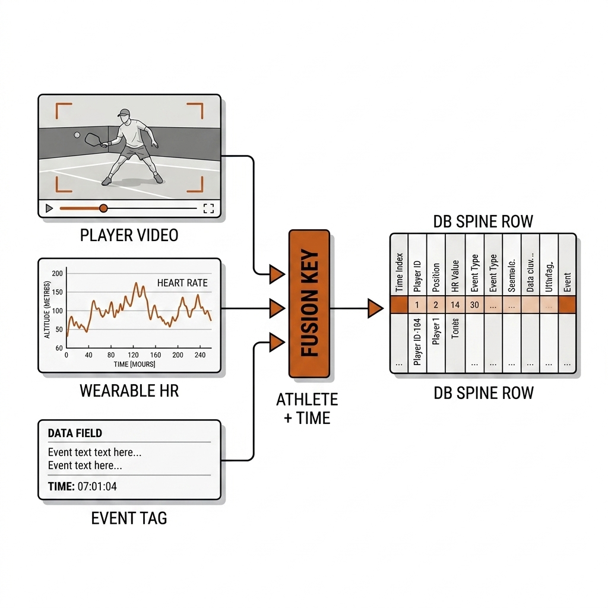
Payoff: the fused row is the atomic unit every downstream chapter reads — resample fast streams down to the slow cadence, never interpolate upward into fabricated precision.
UC 09 — Edge Compute: The M4 Pipeline at $0.00 a Match (E19, Measured)
The practical problem: a sensor stack that costs dollars per match to analyze will not survive a season; the compute location is an economic decision as much as an engineering one. The mechanism is section 30.5's edge profile (E19, experiments/e19-token-economics/token_economics_benchmark.json): on an Apple M4 Max the full pipeline — Neural Engine detection, CPU association and homography, Metal GPU kinematics — runs at 55.7 ms glass-to-glass, 68.4 fps, 28.5 W, $0.00 marginal per match; the cloud comparison is $6.447 per 80-minute match on GPT-4o-class VLMs, a 496.2-match break-even [verify at print].
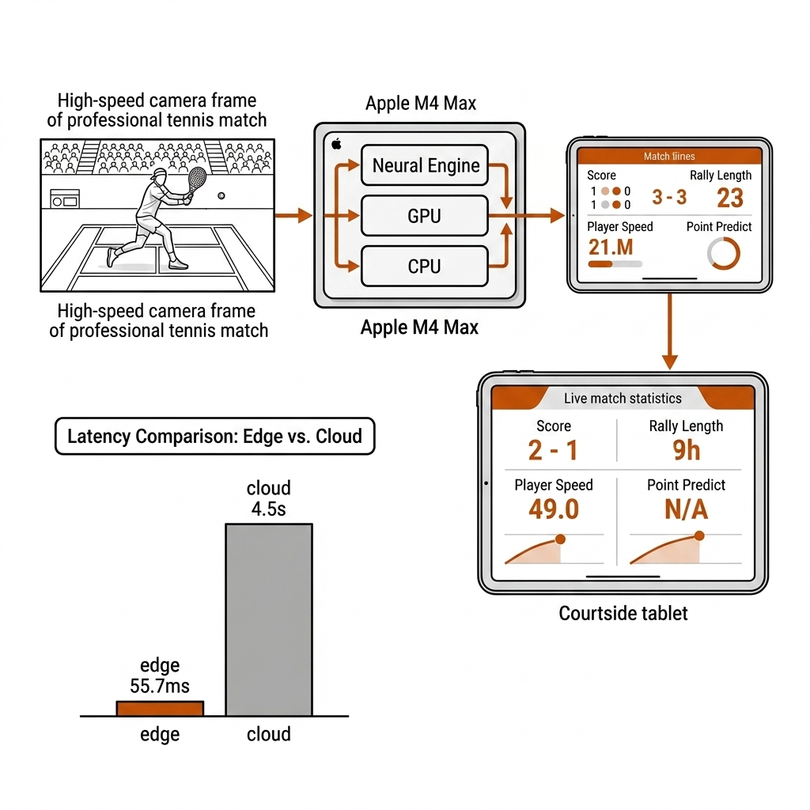
Payoff: sub-60 ms live coaching becomes affordable at amateur scale — and the break-even audit (section 30.10) decides per club which workloads live on the edge versus the cloud.
UC 10 — The Graveyard: Sensor Failure as Design Input
The practical problem is procurement, not engineering: how do you avoid buying hardware that bricks? The mechanism of death is architectural — data routed through a proprietary cloud dies with the vendor's auth server. Section 30.3's verified timeline: Zepp (servers off ~2020), Babolat Play (EOL 2021-12-31), Sony Smart Tennis Sensor (EOL 2021-09-30), HEAD (died with Zepp). The survival pattern is the inverse: open CSV/API export (Catapult, STATSports, Polar, VALD, Hawkin, PB Vision Premium) or an institutional license holder (the league-licensed ball chip of UC 03). Phone vision did not out-sensor the sensors; it out-distributed them — the camera players already owned beat the sensor they had to buy.
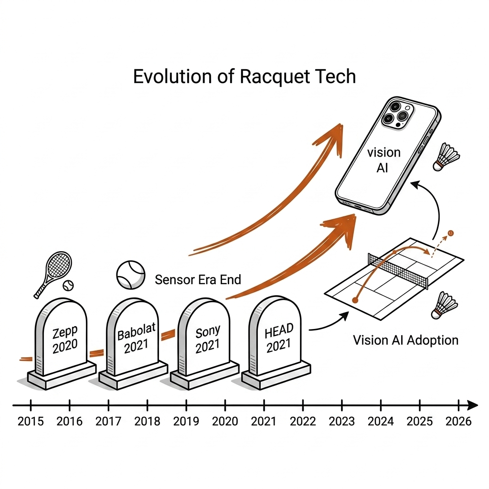
Payoff: one procurement rule that outlives every product cycle — data exit before data entry; a sensor whose rows land in your own spine outlives its vendor.
30.9c What This Adds to the Pipeline
These 10 use cases are the hardware layer applied across the book's five verbs. UC 01-05 feed watching with streams video cannot produce — contact physics (chapter 12's ballistics gain a drag covariate from UC 05 and a contact timestamp from UC 03), physiology (chapter 11's force-blind spot answered by UC 02's load currency), and event boundaries (UC 04's audio feeds chapter 15 and chapter 19's eventing). UC 06-08 are the fusion machinery: the EKF extends chapter 9's tracking through occlusion, PTP disciplines every clock the book touches, and the join writes the chapter-5 spine rows that the chapter-28 cockpit renders and chapter-29 practice design consumes. UC 09 is the acting economics — edge compute is what makes the sub-60 ms live lane affordable — and UC 10 is the procurement guardrail that keeps every other use case from dying with a vendor. The honest labels hold throughout: E19 and E20 and the C30-lab join are measured artifacts; the CIV band, the Potenza price, and the break-even number carry [verify]; and the smart-paddle case is deliberately a lesson, not a product recommendation.
30.10 What I Would Measure Next
- Build the $1,500 rig and measure a session: iPhone 4K120 + Apple Watch + Polar H10 + impact mic, joined in the C05 spine. Deliverable: one fused match row set for a pickleball doubles game, pickleball-side proof of the whole chapter.
- The sync drill: two recording devices, 30 minutes, measure the actual clock drift. The 450 ms figure is theoretical at 15 ppm; your devices are specific. This number decides whether your joins are data or fiction.
- The real-video EKF run: E20's 23.5% is synthetic. Fuse a chapter-9 pickleball track with a logged wearable session and publish the honest field number — and run the same filter on a rugby league GPS trace against broadcast tracking.
- The event-camera trial: a Prophesee dev kit against the chapter-12 ball-blur wall, on Linux, with the latency and detection numbers measured rather than presumed [verify arm64 path].
- The break-even audit: recompute the 496.2-match edge/cloud crossover [verify at print] against current API prices and your own match volume; the conclusion is robust, the number is not static.
30.11 Sources
- Hardware dossier (2026-08-30, verified): the 25-product inventory — Wingfield (https://www.wingfield.io/en/products/cam-plus), PlaySight (https://playsight.com/), SwingVision App Store listing, PB Vision (https://pb.vision/), PlayReplay (https://playreplay.io/), Potenza SMARTx (https://potenzapickleball.com/products/smartpaddle-by-potenza), Zenniz (https://zenniz.com/), Dashr (https://www.dashrsystems.com/), Prophesee GenX320 (https://www.prophesee.ai/event-based-starter-kit-genx320-raspberry-pi-5/).
- Validity literature: Navalta et al. 2024, Sports, DOI 10.3390/sports12090234 (HR valid MAPE <10%; calorie estimates poor); Polar Verity/OH1 validity (https://digitalcommons.wku.edu/ijesab/vol14/iss4/179); Apple Heart and Movement Study pickleball findings (https://www.apple.com/newsroom/2023/10/new-apple-research-highlights-the-health-benefits-of-pickleball/); Hawk-Eye SkeleTRACK (https://www.sony.com/en/SonyInfo/technology/stories/entries/20240411/hawkeye/); Adidas Trionda + Kinexon 500 Hz ball IMU (https://news.adidas.com/football/adidas-unveils--trionda----the-official-match-ball-of-the-fifa-world-cup26-/).
- Lab artifacts (measured):
lab/w7_lab_sensors.py→experiments/c30-sensors/outputs/metrics.json(the fusion join row); E20 →experiments/e20-telemetry-fusion/telemetry_fusion_results.json(EKF: 0.1898 m → 0.1451 m RMSE, 23.5%, synthetic); E19 →experiments/e19-token-economics/token_economics_benchmark.json(edge profile: 55.7 ms, 68.4 fps, $6.447/match GPT-4o, 496.2-match break-even [verify at print]). - Figures: hardware-tier matrix and fusion architecture (dossier-derived); sensor hierarchy, graveyard timeline, smart-paddle anatomy, rugby wearable, EKF pipeline, and edge-vs-cloud figures generated in the book's burnt-orange engineering style (2026-08-30).